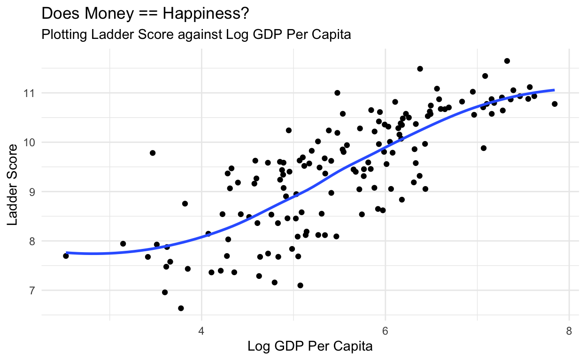

In this exercise, you will apply what you’ve learned in class to perform exploratory data analysis (EDA) on the World Happiness Report and make some pretty plots.
This dataset was downloaded from the website Kaggle. We will use the 2021 data in this exercise. This dataset is stored in an object called happy_full
In this exercise, you will practice:
Please watch the recordings on Dplyr and Ggplot2
A couple useful things to know about your dataset are -
- The number of rows and columns - The types of variables the dataset contains
What function can you use to get this information?
Hint: Try the dplyr glimpse() function.
glimpse(happy_full)We can see that happy_full contains many variables that are of type double.
The happy_full dataset contains many variables. This gives us the chance to practice our select()-ing skills!
Let’s warm up by performing some basic select operations
How would you select just the columns region and ladder_score?
happy_full %>%
select(region, ladder_score)Now select everything between (and including) social_support and generosity
happy_full %>%
select(social_support:generosity)Let’s try something more challenging now. Select all variables that do not have underscores in their names
Hint: You’ll need a helper function. Also, don’t forget !
happy_full %>%
select(!contains("_"))Helper functions can be really…helpful! Ok, no we’re ready to select the variables we will need for the rest of this exercise. Create a new dataframe called happy_df that contains the following variables (in the specified order!) - country_name, region, ladder_score_in_dystopia, logged_gdp_per_capita, social_support, healthy_life_expectancy, freedom_to_make_life_choices, generosity, perceptions_of_corruption
Avoid simply typing out the names of all these variables. Add glimpse(happy_df) as the last line to see if you got the right answer.
Hint: You’ll need a helper function. Also, don’t forget !
happy_df <- happy_full %>%
select(country_name:ladder_score, logged_gdp_per_capita:ladder_score_in_dystopia) %>%
relocate(ladder_score_in_dystopia, .after = region)
glimpse(happy_df)Note: happy_df hasn’t actually been saved anywhere. So we will be using an identical dataset called happy_select for the rest of this exercise.
happy_select contains both numeric and character variables, with lots and lots of observations (rows). This gives us a great opportunity to practice our filtering skills!
Say we’re only interested in looking at data for countries in East Asia. How would we do this?
Hint: To see which major regions are in this dataset, run unique(happy_select$region)
happy_select %>%
filter(region == "East Asia")Now use filter() to only keep data for the following countries - Algeria, Belgium, India, Tunisia, and Uganda. Try to do this without writing multiple filter statements
Hint: Try the %in% operator
happy_select %>%
filter(country_name %in% c("Algeria", "Belgium", "India", "Tunisia", "Uganda"))Finally, let’s filter out information for countries that have a below average ladder score
Hint: Use the base R mean() function
happy_select %>%
filter(ladder_score > mean(ladder_score))Let’s now find out which are the happiest regions in the world. We’ll do this by working out the average ladder_score of all the countries in each region
Hint: Remember the best friends, group_by() and summarise()
happy_select %>%
group_by(region) %>%
summarise(mean(ladder_score)) Now let’s work out the maximum value for each numeric variable, for each region
Hint: across() is helpful here
happy_select %>%
group_by(region) %>%
summarise(across(where(is.numeric), max))Now we move to the fun part - making pretty plots! Let’s begin by getting a sense of the overall distribution of ladder_score in happy_select
happy_select %>%
ggplot(aes(ladder_score)) +
geom_histogram()This plot is fine, but it’s a little chunky. Let’s try a different geom - geom_density() - to see what we get
happy_select %>%
ggplot(aes(ladder_score)) +
geom_density()What does the ladder_score distribution look like for each region? There are many ways to visualize this. Let’s first plot all the distributions on one plot
happy_select %>%
ggplot(aes(ladder_score, fill = region)) +
geom_density()Nice! One small problem with this plot is that distributions are overlapping, making it difficult to visualize everything. Which argument can you adjust to improve this plot? Does it go within aes() or outside? Why?
Let’s consider an alternative way to plot the distributions. Go ahead and use the facet_wrap() function to do this
happy_select %>%
ggplot(aes(ladder_score)) +
geom_density() +
facet_wrap(~region)We can use scatterplots to visualize the relationship between two variables. For example, let’s take a look at the relationship between ladder_score and logged_gdp_per_capita (this relationship might be obvious, but maybe we’ll be surprised!)
happy_select %>%
ggplot(aes(logged_gdp_per_capita, ladder_score)) +
geom_point()It’s clear from the previous scatterplot that relationship between ladder_score and logged_gdp_per_capita is positive, and it looks pretty linear. To highlight this, we can use the geom_smooth() geom (remember to set the se argument to equal FALSE to just get a straight line)
happy_select %>%
ggplot(aes(ladder_score, logged_gdp_per_capita)) +
geom_point() +
geom_smooth(se = FALSE)The plots we’ve made, while nice, look a little…basic. Let’s try to make some improvements. We’ll use the last plot
happy_select %>%
ggplot(aes(ladder_score, logged_gdp_per_capita)) +
geom_point() +
geom_smooth(se = FALSE) +
labs(title = "Does Money == Happiness?",
subtitle = "Plotting Ladder Score against Log GDP Per Capita",
x = "Log GDP Per Capita",
y = "Ladder Score") +
theme_minimal()
Let’s now practice combining datasets by using the Join family of functions from the Dplyr package
The two datasets we will be combining are called happy and happy_join. These are both tiny datasets that will make it easier to understand what the *_join() functions are doing
Let’s first familiarize ourselves with these two datasets -
happy
| country_name | ladder_score | gdp | social_support |
|---|---|---|---|
| Iraq | 4.854 | 9.240 | 0.746 |
| Comoros | 4.289 | 8.031 | 0.626 |
| Panama | 6.180 | 10.350 | 0.896 |
| Maldives | 5.198 | 9.826 | 0.913 |
| Spain | 6.491 | 10.571 | 0.932 |
happy_join
| country_name | healthy_life_expectancy |
|---|---|
| United Arab Emirates | 67.333 |
| Serbia | 68.600 |
| Lesotho | 48.700 |
| Togo | 54.914 |
| South Africa | 56.904 |
| Iraq | 60.583 |
| Comoros | 57.349 |
| Panama | 69.652 |
| Maldives | 70.600 |
left_join()A requirement for all joins is the presence of a variable that is common to both datasets being joined. In the case of happy and happy_join this variable is country_name
Let’s perform a left_join() on this variable and then examine the output
happy %>%
left_join(happy_join, by = "country_name")Compare this output to happy. Notice that we now have additional information on healthy life expectancy for all the countries in happy except for Spain. The reason for the NA for Spain in this category is because this information is missing from happy_join
So you can see how we can use left_join() to add new variable(s) to our dataset
right_join()Now do a right join, recalling that this is syntactically identical to a left join except you replace “left” with “right”
happy %>%
right_join(happy_join, by = "country_name")Carefully look at the output. How is this different from a left join? In this output we only retain countries found in happy_join. Along with the healthy_life_expectancy variable, we also have three additional variables - ladder_score, gdp, and social_support - obtained from the happy dataset. Again, countries that are non-overlapping between these two datasets have NAs for these additional variables
So you can think of a right join as being the inverse of a left join
inner_join()Again, run the code for an inner join and we’ll then take a look at the output
happy %>%
inner_join(happy_join, by = "country_name")Here we see that we produce a dataset that only contains countries that are common to both happy and happy_join. This dataset also contains all the variables from both original datasets, and has the nice feature of not containing any missing values (i.e. NAs)
This is a useful join to use if you want your output to be complete and not contain any missing data
full_join()Let’s complete this section with the most complete join - the full join
happy %>%
full_join(happy_join, by = "country_name")happy and happy_join. Use this if you don’t want to discard any data during your data wrangling